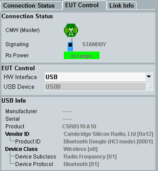

The tab "EUT Control" contains the indication of "Connection Status" and the parameters of USB connections.
USB information displayed depends on the selected HW interface. For the test setup, refer to "Tests with USB Interface".

The "Connection Status" is described in detail in the previous section "Connection Status Tab - Connection Status".
Specifies a USB control connection to the EUT. The driver of a connected EUT must be installed, refer to "Tests with USB Interface".
- "None": configures the RX measurements without controlling the EUT via USB interface.
- "USB to RS232 Adapter": displays the transmission parameters of the serial interface realized via USB connection with USB to RS232 adapter.
If the EUT is connected to a USB port, the mapped virtual COM port can be automatically detected by pressing the hotkey "Refresh COM Port List" (see "Refresh COM Port List (hotkey)").
The settings are the same as in the configuration tree, see "EUT Control". - "USB": specifies the tested device connected directly via USB port (connection without serial adapter). The R&S CMW lists all detected EUTs as "USB Device" values.
The settings are the same as in the configuration tree, see "USB". Also, "USB Info" area is displayed.
Displays EUT information received via USB control interface. This area is visible if "HW Interface" = "USB"
Remote command: